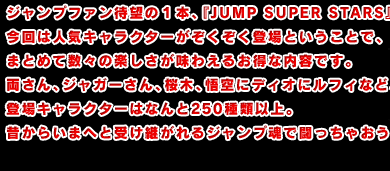
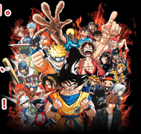
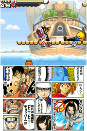
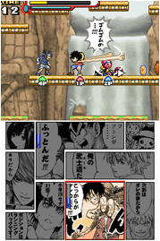
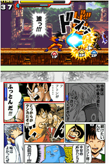
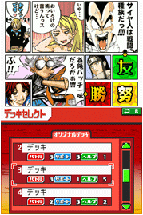
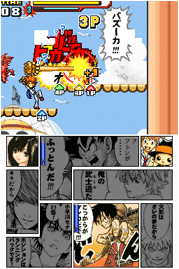

まず『Ｊアドベンチャー』から着手。
アクションが使えるようにならないと当然進めないのですが、『Ｊアドベンチャー』では丁寧に手ほどきしてくれるので、慣れるまでじっくり操作を学べます。
そしてそれぞれ非常に簡単なアクションでＯＫなので、誰でもすぐに覚えられるはず。
なぜここから手をつけたかというと、ミッションクリアーで"コマ"をゲットできるからですよー。
コマは戦略を組む上で非常に重要な要素なので、先に集めておきたい重要ファクターです。
|


|

週刊少年ジャンプは漫画です。漫画にはページ内で『コマ割り』が存在しますね。
下画面は漫画のページのような画面ですが、このコマとキャラクターの組み合わせによってデッキが違ってくるという面白い仕組み。
漫画を読んでいた人ならピンと来る場面も多数あるので、この戦略によって自分の戦い方が変わってくるわけです。ここは頭脳の使い所。
|


|

やはりバトルということで、ここは通信プレイをやらずにいられません！
「ＤＳワイヤレス対戦」や「ＤＳダウンロード対戦」で、好きなだけ白熱のバトルを堪能できます。
対戦中にした画面をタッチすることで、好きな時にキャラクターを交替できるので、替え時を見極めるのがポイントかな？
それぞれのキャラクターの特性をじっくり知ってから選べるといいな、と思います。
私のお気に入りはジャガーさんで、いかにもジャガーさんらしい闘い方がツボ。
この辺は、本誌を読んでいる人ならだいたいわかるんじゃないでしょうか。
また、バトルモードではお好きなステージでコンピューター対戦が可能。
やっぱりキャラやステージが好きかどうかで動きや調子が違うようで、苦手なステージやキャラクターを克服するのにはうってつけだし、自分の持ちキャラを更に極めるにはもってこい。
このソフトではやはり説明不要な痛快アクションが堪能できるので、みんなでワイワイ遊ぶのがいちばん楽しいはず！
|
|